Получение практических навыков работы в консоли с атрибутами файлов, закрепление теоретических основ дискреционного разграничения доступа в современных системах с открытым кодом на базе ОС Linux.
Через учетную запись администратора создала нового пользователя guest и задала пароль.
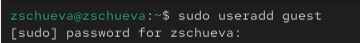
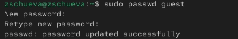
Вошла в систему от имени ползователя guest и определила, где нахожусь с помощью команды pwd.
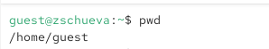
Уточнила имя пользователя.
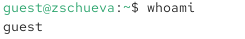
Уточнила группу пользователя с помощью команд id и groups.
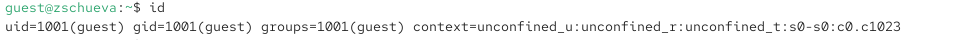
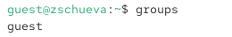
С помощью команды cat /etc/passwd вывела свою учетную запись и адрес домашней директории.
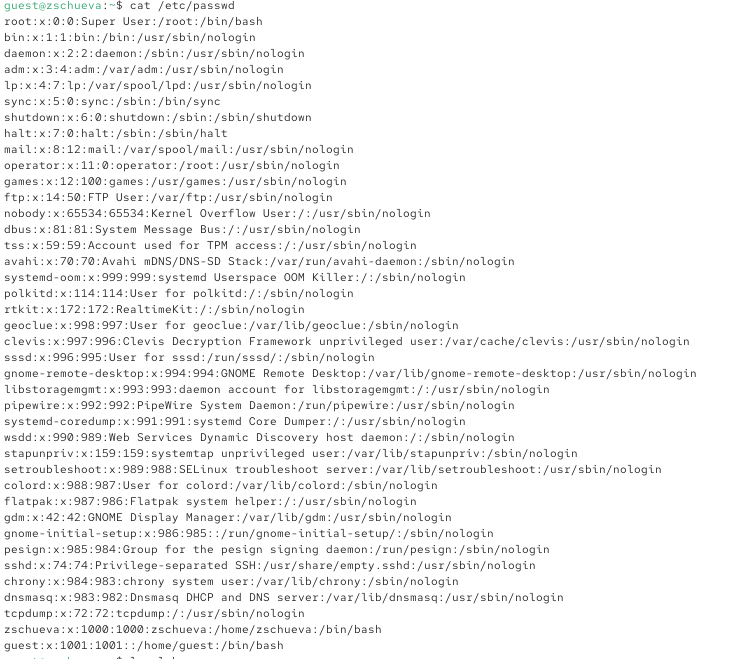
Определила и сравнила uid и gid пользователей.
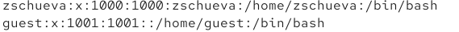
Определила существующие в системе директории с помощью команды ls -l /home/
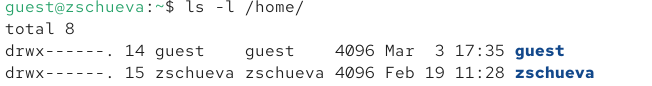
Проверила, какие расширенные атрибуты установлены на поддиректориях, находящихся в директории /home, командой lsattr /home
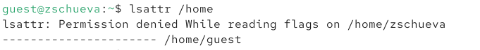
Создала в домашней директории поддиректорию dir1 командой mkdir dir1
Определила командами ls -l и lsattr, какие права доступа и расширенные атрибуты были выставлены на директорию dir1.
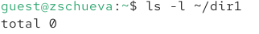
Сняла с директории dir1 все атрибуты командой chmod 000 dir1 и проверила с её помощью правильность выполнения команды ls -l
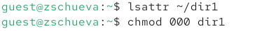
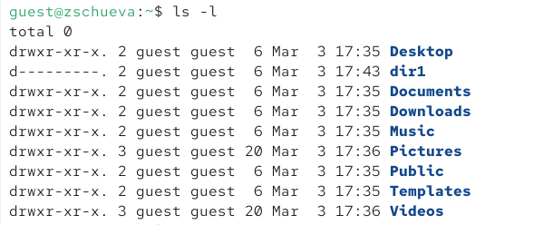
Попыталась создать в директории dir1 файл file1 командой echo “test” > /home/guest/dir1/file1. Получила отказ в выполнении, так как на директорию dir1 были установлены полностью запрещающие права (для владельца, группы и остальных пользователей).
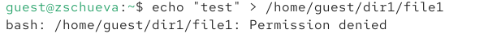
Проверила командой ls -l /home/guest/dir действительно ли файл file1 не находится внутри директории dir1.
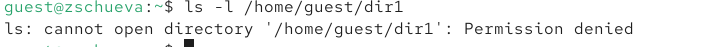
Получила практических навыков работы в консоли с атрибутами файлов, закрепила теоретические основы дискреционного разграничения доступа в современных системах с открытым кодом на базе ОС Linux.